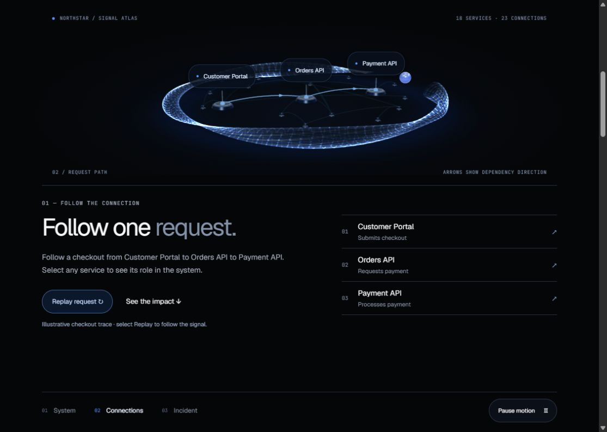
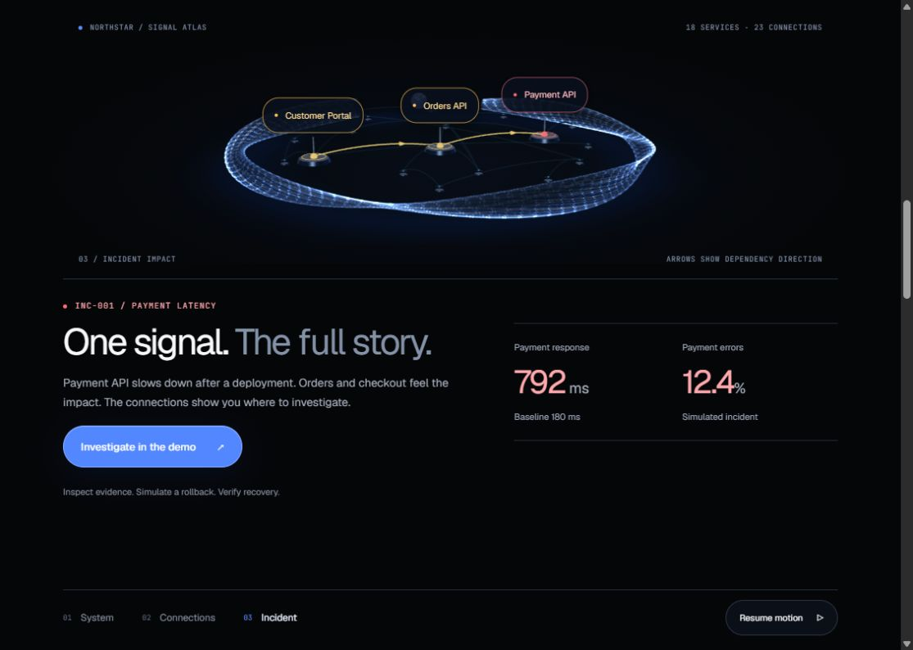

Keep the network in view
One persistent Three.js scene carries service positions across chapters. The camera changes emphasis while stable landmarks help an engineer recognise the same system.
An interactive website that makes infrastructure dependencies visible through a 3D atlas, a checkout request, and a simulated payment incident.
Visit the websiteThe reel presents the ORBIT website in three scenes: the Signal Atlas, the checkout request trace, and the simulated Payment API incident.
How can a website make a system of connected services understandable in one visit?
ORBIT is a fictional infrastructure intelligence concept for platform and DevOps teams. Its website introduces Northstar, a sample network of 18 services and 23 connections, through three views of the same space. Visitors start with the whole system, follow one checkout request, and see what happens when payment latency rises.
I developed the direction around Connected O, an open ring with a single blue node. It carries through the brand and the Signal Atlas, the interactive network at the centre of the site.
A rotating network can communicate scale without explaining what any connection means. The design challenge was to keep the opening visually distinctive while giving visitors a concrete example they could follow from beginning to end.
Checkout became that example because the same path can answer two questions. A request travels from Customer Portal through Orders API to Payment API. When Payment API slows down, the delay affects the services that depend on it. The visual states needed to distinguish those directions clearly.
A filterable service directory and recovery illustration let visitors inspect the example after the scroll story.
One persistent Three.js scene carries service positions across chapters. The camera changes emphasis while stable landmarks help an engineer recognise the same system.
Opening copy introduces the idea in plain language. Service names, latency, and error rates appear around the request and incident where they help explain the story.
Chapter links, request replay, keyboard-accessible service controls, and a filterable directory give visitors more than one way to follow the network.
A pause control, reduced-motion states, and a text explanation preserve the request path when visitors pause the scene or WebGL is unavailable.


The website combines the Connected O identity, the three Atlas chapters, a service directory, and an illustrative recovery sequence. Browser checks covered request replay, chapter links, keyboard inspection, reduced motion, and the fallback when graphics are unavailable.
All services, incidents, and recovery metrics are fictional. The project explores a way to explain infrastructure relationships, and has no measured production or business results.